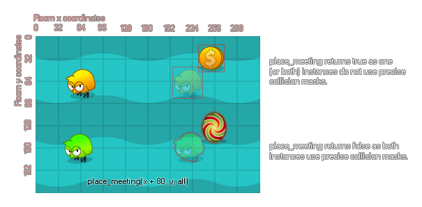

place_meeting(x, y, ob);
| Argument | Description |
|---|---|
| x | The x position to check. |
| y | The y position to check. |
| obj | The instance or object to check for. |
Returns : Boolean
With this function you can check a position for a collision with another instance or all instances of an object using the collision mask of the instance that runs the code for the check. When you use this you are
effectively asking GameMaker:Studio to move the instance to the new position, check for a collision, move back and tell you if a collision was found or not. This will work for precise collisions,
but only if both the instance and the object being checked for have precise collision masks selected otherwise only bounding box collisions are applied. This function also accepts the special keywords all
and other. Please note that should you need to get the unique instance id of the object being collided with, you should use
instance_place.

if keyboard_check(vk_left)
{
if !place_meeting(x - 5, y, obj_wall) x -=5;
}
The above code checks to see if there is not a collision to the left of the instance and moves the instance if there is none.